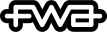

Kaos Logo Generator
Voice driven generative visualization.
[此案例未有提供中文翻譯]
AKQA Portland reached out to Lusion for a very interesting project for the new dayclub/nightclub - KAOS at the Palms Resort. They were looking for a digital partner to help create an audio driven logo generator and wanted to collaborate with us to refine the look of the generated logos. The idea was inspired by the Chaos Theory - the notion that amongst the apparent randomness of chaos is the existence of underlying patterns. They wanted to create a living, breathing, constantly evolving logo and design system. A system that allows the web users to generate their unique logos using their own voices.
In the brief, it mentioned that the system will live not only on the Web but also for live audio. The generated logos will also be used across all elements of the KAOS brand design and identity including posters, signage and billboards. It means that we could not simply create a web based logo generator and expect that the quality of the generated logos would be good enough for the high resolution billboard prints.
Our Solution: “Two Pronged Approach”
We suggested building the entire logo generator on two different platforms - one on the Web and one in Houdini Fx. The Web version will be used as the live logo generator and to generate the mid-to-low quality logo assets. The Houdini version will be used as the R&D tool to refine the look and to generate the high quality logo assets. The creative team at AKQA could also use this Houdini Fx source file to produce more high quality assets and other promotional products. Since we had experience building web applications using Houdini Fx for R&D, it did not actually take us twice the effort to build the same generator in two different platforms. The result of using this approach made the collaboration process a lot smoother.
R&D with Houdini
To obtain the audio data we needed for the R&D in Houdini, we used Meyda to extract the audio features out of several recordings. When we were refining the look of the logo in Houdini, we always kept in mind that we had to replicate the exact same look at the end in WebGL, otherwise the R&D would become a total failure. Instead of using some of the built-in tool sets like the “Blurring”, “Resampling”, “Procedural noises” etc in Houdini, we had to build our own version of these tool sets to make sure the look was identical on both platforms. Luckily, we used this Houdini R&D workflow before so we had a few cards in our sleeves already for the tasks. With this workflow, we were able to supply the high fidelity renders and the high resolution 3D models to the creative team at AKQA Portland.
To make the creatives’ life easier, we also use Redshift to render a couple of custom AOVs(passes) and then we even created a Photoshop action to put all those AOVs into the different layers and compose them into several designer-friendly PSD files for the creative team at AKQA Portland to create other visual contents.
WebGL Logo Generator
For the WebGL logo generator, we reused the nodes and vex codes we used in Houdini and as a result, the logo in WebGL looks pretty much identical in our Houdini version. Here are a few features and tricks we used to create this WebGL experience:
- WebAudio - In our WebGL Logo Generator, we used WebAudio to capture the user's voice and used Meyda to analysis the audio features to create their own custom logo.
- Matcap Shading - We used Matcap shader for the wires rendering. We prebaked the diffuse intensity and the specular intensity into Red and Green channel of a 64x64 image and used it for the Matcap shader to render the wires dynamically.
- Screen-Space Wire Rendering - Unlike our Houdini version, our WebGL application needed to work smoothly on lower end mobile devices. Instead of rendering the logo wires as 3d tubes like we did in Houdini, we decided to use a screen space rendering technique to render the wires. Each wire segment was simply a quad. We calculated and stored the screen space rotation of each node of the wires in the GPU and we combined with the Matcap technique to make it look smoother.
- Audio Feature Optimization - We updated all of the live feature data into a 8-bit texture for reading in shader. We also had some GLSL shader snippets like
powerSpectrum_ease_3(time)to get the powerSpectrum feature with an easing level of 3 in the audio at certain times of the audio which made it easier to map the Vex codes used in Houdini. - HighRes Exports - In the WebGL generator, we created a logo image exporter that can export high resolution PNG images and SVG. For the PNG exports, instead of simply exporting the WebGL canvas, we rendered the logo into a separated clean WebGL framebuffer instead to give us more flexibility to display different things on the main WebGL canvas. However, with WebGL 1, it didn't support multisampling framebuffer and it looked aliasing and ugly. So, we decided to create a temporal filter to collect the subpixel information over multiple iterations across several frames. Our exporter supported up to 256 x AA which looked more than good enough for a hair thin wire in the logo.
|  | Site of the Day |